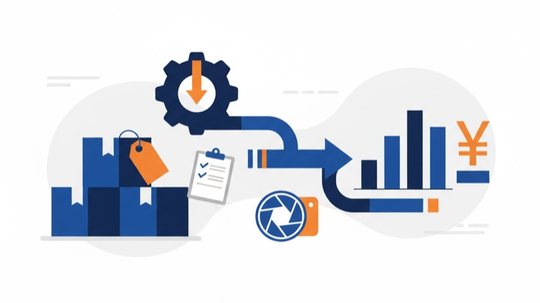
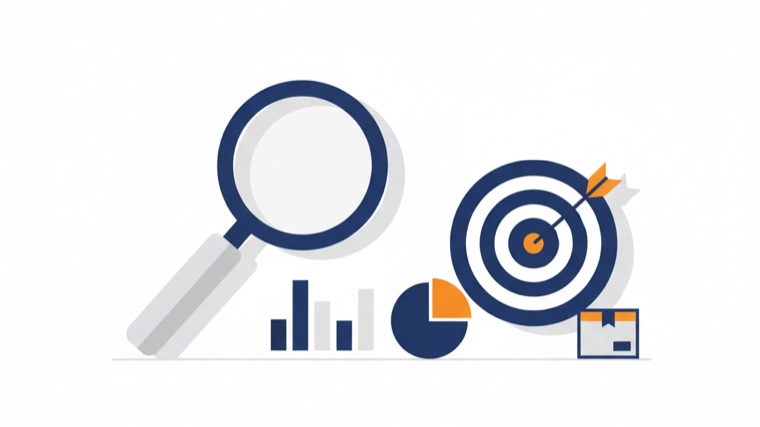
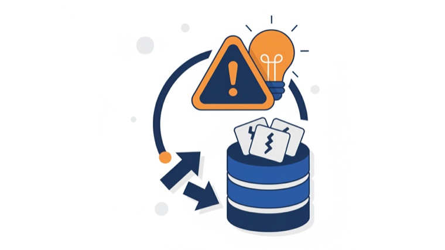
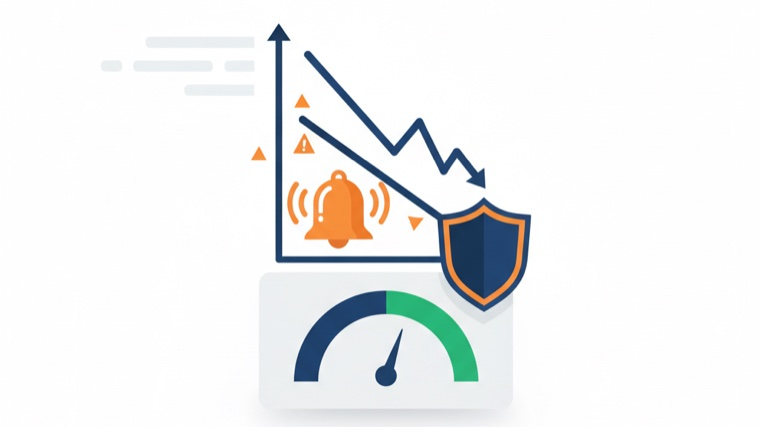

Our Own Brands
外から指示を出すだけのコンサルではありません。商品を企画し、画像を作り、広告を回し、在庫を抱え、レビューに一喜一憂する——その全部を、自分たちのブランドで毎日やっています。だから提案は机上論になりません。自分たちで試して効いた"型"を土台に、お客様の状況に合わせて一緒に組み立てます。
わずか3商品で会社の主力事業に育てた自社ブランド。商品企画も、画像も、広告も、在庫も、外注せず自分たちの手で。ここで実際に効いた施策を、お客様の事業に合う形にして持ち込みます。
公式ストアを見る「どう知ってもらうか」に挑戦中の自社フレグランスブランド。公式サイト・SNS発信・コンテンツSEO・ECまで内製で運用し、認知の作り方そのものを自分たちで検証しています。
公式サイトを見る現場の数字も、売れない時の痛みも、自分ごととして知っている。この当事者の経験こそ、ヤシノミの提案が机上論にならない理由です。
Our Services
「数字 × 自動化 × 運用支援」を軸に、Amazon運用も、店舗・中小企業の業務改善も。めんどうな裏側をまるごと引き受け、お客様が本業に集中できる状態をつくります。
担当者の方がAmazonの知識とスキルを習得し、自律的にアカウントを運用・改善していけるよう、実践的な教育と伴走サポートを提供します。
Amazon支援の詳細・料金・事例を見る→店舗・中小企業向けに数字の見える化・集客HP・公式LINE・日次レポート自動化を代行。「毎日の集計に追われる」状態から、毎朝 数字が勝手に届く状態へ。
こだわり商品を「まず売れる魅力」に引き上げる商品画像を提案。AI活用から物撮りまで、お客様に希望をお伺いした上で、クリエイティブ制作を支援いたします。
Our Strengths
「自社で実際にやっている会社」だからこそ、お渡しできるものがあります。
私たちが大事にしていることを、正直にお伝えします。
アドバイスして去るだけの存在ではありません。複数の自社ブランドをゼロから立ち上げ、今も自分たちの商品を売り続けています。今日も使っている"勝ち筋"を、お客様の状況に合わせて持ち込みます。
派手な一発ではなく、お客様ご自身で回し続けられる状態を目指します。最初から完璧を狙わず、まず確実に再現できる型をつくる。私たちがいなくなっても回る——それがゴールです。
代表はニデック（旧・日本電産）で生産技術者として現場のムダ取りに明け暮れた後、独立してAmazonの自社ブランドをゼロから立ち上げ、主力事業に育成。さらにAmazon運用代行・コンサルティング会社でも実務を重ねました。"仕組みに変える視点"・"自分で売る当事者の経験"・"他社を支援する実務"、その全部を掛け合わせて最適解を出します。
担当がころころ変わる大手とは違い、少数精鋭が顔の見える距離で直接伴走します。さらに初期費用ゼロ・月額固定・1ヶ月ごとの更新。気軽に始めて、合わなければいつでも見直せます。
Client Work
自社ブランドで磨いた「仕組み化・見える化」の考え方を、店舗・現場の業務改善にも応用しています。うまくいったことも、まだ途中のことも含め、実際に取り組んだ事例をご紹介します。
「数字がどこにあるか分からない」状態を解消。予約・売上を経路別に見える化し、集客HP・公式LINE・日次レポートまで仕組み化。スタッフが数字を集める手間をなくし、"次に何をするか"が毎朝決まる状態にしました。
01 相談
数字が
見えない
02 仕組み化
経路別集計
HP・LINE
03 運用
毎朝
次の一手
すでに自力で回っていた知人の現場管理を、それでも続く形に作り替えるため、現場管理アプリ「デズラ」を共同で立ち上げ。企画・設計から日々の運用・改善までほぼすべてをヤシノミが担当しています。いまはまず1人の現場を丁寧に支えている段階です。
01 相談
現場管理の
お困りごと
02 仕組み化
社長と共同で
アプリ化
03 運用
運用代行→
他社展開へ
施術後のサンクスメールやレビュー依頼をLINE（Lステップ）で自動化。スタッフの負担を減らしつつ、お客様とのエンゲージメントを強化し、リピート率の向上につなげました。
01 相談
フォローが
手作業
02 仕組み化
Lステップ
で自動化
03 運用
リピート率
向上
How We Work
私たちの仕事の本質は「仕組み化」と「見える化」です。まずお話を伺い、属人的な手作業を仕組みに置き換える。数字が見えて次の方針が決まる状態をつくり、お客様の工数を増やさずに回るようにします。これを自社ブランドでも、他社のご支援でも、同じ徹底度でやっています。
Input
属人的・手作業・見えない
Systematize
現役の運用ノウハウを、仕組みに落とす
Output
お客様の手間は増えず、判断に集中できる
この"仕組みにする"工程を、自社ブランドでも、EARNESTでも、デズラでも、同じ徹底度で。だからお客様は人を増やさずに、「毎日見て、すぐ動く」状態になります。
Business Improvement Insights
弊社が実際に取り組んだ業務改善を徹底的に深掘りし、他社でも応用できる「型」として公開していきます。
投入候補をTier（S/A/B/C＋手動マーク）で仕分け、稼働中は毎朝Slackに“悪化が見える表”が自動で届く。日次の見張り・経過観察テーブル・週次の検証ループを、通知イメージ付き（数値は伏せ）で公開します。
記事を読む少額のSaaSが積み上がった固定費を、全課金の洗い出し→4つの判定→解約・返金交渉→棚卸しの仕組み化まで。重複課金の返金や過剰プランの整理を、自社でやった手順で公開します。
記事を読む
Amazon FBAの在庫評価を、レポートAPIで自動取得→原価マスタと突合→評価額を算出→記録・Slack通知まで自動化。APIのレート制限でつまずいた設計の学びも公開します。
記事を読む
広告が一切打てないニッチ市場に新規参入するか否か。「そもそも市場は在るのか」を海外の実売データで確かめ、原価を逆引きし、提案書を削り込んで“小さく賭けて早く見極める”計画に落とすまでの意思決定を、金額は相対値で公開します。
記事を読む自然検索順位・価格・BSRを毎日「同じ条件で」追う理由。目視チェックをやめて自動追跡に仕組み化した意思決定と、取得→記録→通知の設計、海外IPで圏外になる等のつまずきを公開します。
記事を読む始めた経緯と、実際に「回る」仕組みのリアル。動画→クリエイター→購入の構造、バズ動画の型、ショップ評価スコア（SPS）と初期販売数量がなぜ効くのか――運用で得た学びを実務目線で公開します。
記事を読む
成功談ではなく、失敗をどう型として蓄積し、次の意思決定に差し込むか。少人数の会社が失敗を組織の資産に変える方法を公開します。
記事を読む
毎週の改善ループと毎日の早期警告で「気づいたら赤字」を防ぐ仕組み。4レンジ分析・入札ルール・危険シグナルを表とグラフで具体的に公開します。
記事を読むモール精算データから仕訳を自動で組み立て会計ソフトへ投入する仕組みを、仕訳イメージ図とつまずきポイントの表つきで公開します。
記事を読むお礼・使い方・再購入の声かけを自動ステップ配信に置き換える方法を、配信フロー図と「嫌われない設計」の表つきで解説します。
記事を読む広告を止めても来る入口の作り方。キーワード選び・記事の型・購入導線・順位の見える化までを、表と推移グラフで具体的に公開します。
記事を読む専用マシン・時間帯リトライ・重複防止・別マシンからの見張り。「静かに止まる」事故を防ぐ4つの仕掛けを、全体図つきで解説します。
記事を読むすでに回っていた知人の現場管理を、それでも作り替えた理由。どんな手札を比べ、なぜその設計を選んだか――成果自慢ではなく、課題への向き合い方を公開します。
記事を読む本業のEC・Amazon運用で使う「まず市場があるか確かめ、数字で原因を絞り込む」考え方を、別業種のサロン立て直しに適用した実例。売上は相対指数で示し、結果ではなく向き合い方そのものを公開します。
記事を読む診断を成約の罠にしない、という設計思想。質問の選び方・結果の返し方・やらないと決めたこと――煽らず見極めてもらう導線の作り方を解説します。
記事を読む集客経路を分解し、HP・LINEを連携させて「毎朝、次の一手が分かる」状態をどう作るか。中小事業者がすぐ真似できる見える化の手順を解説します。
記事を読む少人数の会社が人を増やさず事業を回すために自動化した実物リストと、業種を問わず使える「自動化の型」5ステップを公開します。
記事を読むやりたい配信やFLEXメッセージのデザインを日本語で指示するだけで形にできる柔軟さを、手札の比較表とFLEXの実例つきで解説します。安さではなく「自在さ」の話です。
記事を読むHow to Start
まずは無料相談から。お客様の状況を伺い、仕組みに落とせる部分を一緒に見つけるところから始めます。いきなり契約や費用が発生することはありません。
「何が手間か」「どの数字が見えていないか」をお聞きします。まだ整理できていない状態でOK。オンライン30分から。
伺った課題を、集計・見える化・自動化の仕組みに落とし込んだ具体案と進め方・費用をご提示します。
仕組みを構築し、その後の運用も代行。お客様の工数を増やさず、「毎日見て、すぐ動く」状態を一緒に続けます。
オンライン対応。費用・契約は提案にご納得いただいてからで構いません。
FAQ
もちろんです。オンライン30分からお話を伺います。いきなり契約や費用が発生することはありません。費用や進め方は、ご相談のあとに具体案とあわせてご提示し、ご納得いただいてからで構いません。
大丈夫です。「何が手間か」「どの数字が見えていないか」を一緒に洗い出すところから始めます。仕組みに落とせる部分を見つけるのが私たちの仕事なので、整理できていない状態でこそご相談ください。
店舗・中小企業を中心に、業種を問わずご支援しています。実際に、美容サロン（EARNEST 様）や建設・公共事業の現場（デズラ）など、「数字が見えない・集計が手作業」という共通のお困りごとを仕組み化で解決してきました。
課題の内容や仕組みの範囲によって変わるため、ご相談のうえで具体案とあわせてお見積りします。最初から大きく作り込むのではなく、効果の出やすいところから小さく始めることも可能です。
はい。私たち自身が現役のAmazonセラーで、運用支援・教育（チームの自走支援）まで対応しています。料金例や導入事例は Amazon支援ページ にまとめています。
オンラインで全国対応しています。大阪府内および近隣のお客様へは、必要に応じて訪問し、より密に連携しながら進めます。
Our Culture
支援先にも、自社ブランドにも、同じ価値観で向き合っています。
考え方を、短い読みもので。気になるものからどうぞ。
Company Profile
| 会社名 | 合同会社ヤシノミ |
|---|---|
| 代表 | 四宮 慶人 |
| 事業内容 | Amazon運用支援・ECコンサルティング・自社ブランド運営 |
「困難は必ず解決策をつれてやってくる」
この言葉を信条に、お客様のECビジネスが直面する課題に、共に真摯に向き合います。
ヤシノミの土台は、私自身が現役のAmazonセラーであること。自社ブランド「CHO-JU」を3商品で主力事業に育て、いまは「COLLEGRANCE」など複数ブランドを運営しています。ニデックでの現場改善、独立後のブランド立ち上げ、コンサル会社での実務――その全部を、お客様の支援に持ち込みます。
大切にしているのは、顔の見える関係で直接お話しすること。作業を代行するだけでなく、お客様自身が運用・改善を続けられる力をつけることをゴールにしています。（大阪近郊は積極訪問／現在は3名体制）
代表社員 四宮 慶人
〒563-0032 大阪府池田市石橋1-15-33
For Existing Clients
いつもありがとうございます。ご連絡・ご相談はこちらからどうぞ。
※レポート閲覧・専用ダッシュボード等の窓口は今後ここに集約予定（仮）
オンラインでの無料相談も以下のボタンから簡単に予約いただけます。